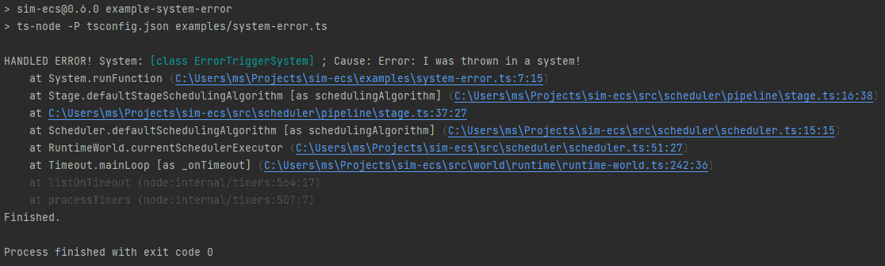

sim-ecs - v0.6.1
sim-ecs
A type-based, components-first, fully async batteries-included ECS, which is optimized for simulation needs. There's a big emphasis on developer experience, like type-hinting and auto-completions. Sim-ecs will run in NodeJS, BunJS and the browser.
npm install sim-ecs
- Considerations
- Why use sim-ecs
- Examples
- Where is the Documentation
- Setting Resources
- Defining Components
- Adding Entities
- Working with States
- Update loop
- Commands
- Saving and using Prefabs
- Syncing instances
- Building for Production
- Plugins
- Performance
Considerations
This ECS is inspired by SPECS and bevy-ecs (two Rust ECS libraries), however optimized for TypeScript. It is built for easy usage (DX) and high iteration speed. The trade-off is that insertion and deletion are slower, however there are optimizations and opinionations in place to still make it fast. For example, by using commands, these operations are batched and executed when it is safe to perform them.
In order to create optimized simulation runs, the ECS has to be fully specified in the beginning. All components, systems and queries need to be registered at the start.
Why use sim-ecs
Sim-ecs was created out of the lack of a fast, featured ECS library for TypeScript, which is able to handle the requirements in a big, agile game project. While there are other ECS libraries available, they do not necessarily cater to that goal and will have short-comings in such an environment.
Sim-ecs comes with batteries included to make sure everything fits together and is simple to use. The focus is on developer-friendliness (by supporting full type/intention support in the IDE), support for a variety of scenarios and performance.
Since sim-ecs implements many bevy-ecs RFCs, it is very featured and modern. It can be used inside a generic game engine or for a game directly.
Runtime requirements
If using the prebuilt library, "ES2020" was selected as the build target. Hence, this is the matrix:
| App | Version | Comment |
|---|---|---|
| Chrome | 80+ | Desktop and mobile |
| Edge | 80+ | |
| Safari | 14.1+ | Desktop and mobile |
| Firefox | 80+ | Desktop (no info on mobile) |
| Opera | 67+ | Desktop |
| Samsung Internet | 13.0+ | |
| NodeJS | 14+ | |
| Deno | - | ESM + TS is a blocker |
| Bun | 0.2.2+ |
Examples
For quickly seeing the ECS in action, there are several examples available.
You can find them in the /examples directory.
Counter
$ npm run example-counter
The counter example is a very small, minimal example to get a quick overview. It increases a number a few times and then terminates. You can run it using:
Events
$ npm run example-events
The events example demonstrates how to use the event bus to write and read events. It will print a message every second and can be executed with:
Pong

$ cd examples/pong && npm install && npm run start
Pong is a full game which can be run in the browser. It demonstrates all features of sim-ecs. It comes with numerous components and systems, handles states and makes use of prefabs and saves. Since it is an ECS demo, other parts of the game code may be minimal, like rendering and sound. It is recommended to use readily available libraries for these parts for any real endeavour, like BabylonJS.
You will need to build Pong from its directory.
Then, you can open the index.html in the public folder to run the game.
System Error

$ npm run example-system-error
Error handling is very simple with sim-ecs. It uses the events system to catch and provide handling opportunities without aborting the execution. The System-Error example demonstrates how error handling works with a simple example.
Where is the Documentation
Anything which is not explained in detail enough in this README can be found in the code. You will notice that there are spec-files. These contain the specification for a certain class, which usually means an interface with comments on what the methods do.
Also, there is a generated API-documentation available!
Creating the ECS and a World
In an ECS, a world is like a container for entities. Sim-ecs comes, by default, with two variants: A prepare-time world and a runtime world.
Prepare-Time World
The prepare-time world is a place which focuses on easily preparing a simulation. That means, this is the place where everything should be defined and readied.
const prepWorld = buildWorld().build();
See IPreptimeWorld
Runtime world
After the preparation is done, a runtime world can be forked, which is optimized for executing a simulation. One of the main differences is that this world is not as configurable, in order to optimize for what was set up in the prep-time world.
const runWorld = await prepWorld.prepareRun();
See IRuntimeWorld
Scheduling a run
In sim-ecs, a run has to be planned ahead. This is done by giving a developer the means to put systems into stages and then decide in which order stages should run and if they run in parallel.
One thing to add is that a pipeline, which contains the entire program order, is made up of "Sync Points". These
constructs allow for hooking into the plan in a non-destructive way. For example third-party code (like plugins)
can make use of such a feature to add their own Systems at the right place in the program chronology.
If that's not necessary, sim-ecs will work fine with just the root Sync Point.
const prepWorld = buildWorld()
.withDefaultScheduling(root => root
.addNewStage(stage => stage
.addSystem(CounterSystem)
)
)
.build();
Since this is a very verbose way, sim-ecs also adds a data-driven approach, which enables schedules to be stored as simple arrays which can even be loaded without logic. The Pong example demonstrates this by providing several schedules, stored as separate data. In short:
import {buildWorld, ISyncPointPrefab} from "sim-ecs";
const gameSchedule: ISyncPointPrefab = {
stages: [
// Stage is executed sequentially (order guaranteed!)
[BeforeStepSystem],
[InputSystem],
[
// Systems inside a stage are executed in parallel, if possible (no order guaranteed!)
MenuSystem,
PaddleSystem,
PauseSystem,
],
[CollisionSystem],
[BallSystem],
[AnimationSystem],
[
RenderGameSystem,
RenderUISystem,
],
[ErrorSystem],
],
};
const prepWorld = buildWorld()
.withDefaultScheduling(root => root.fromPrefab(gameSchedule))
.build();
Setting Resources
Resources are objects, which can hold certain data, like the start DateTime.
// this call implicitely creates a new object of type Date. You can also pass an instance instead.
// you can pass arguments to the constructor by passing them as additional parameters here
prepWorld.addResource(Date);
console.log(world.getResource(Date).getDate());
Defining Systems
Systems are the logic, which operates on data sets (components). They are logic building blocks which separate concerns and make the world move.
const CountSystem = createSystem({
query: queryComponents({counterObj: Write(Counter)}),
})
// this function is called every time the world needs to be updated. Put your logic in there
.withRunFunction(({query}) =>
query.execute(({counterObj}) => console.log(++counterObj.a))
)
.build();
See createSystem(), ISystemBuilder
System Parameter Types
A system can request different types of parameter:
const CountSystem = createSystem({
// Queries are most obvious, since they allow access to stored data
// All parameters form the query, and only entities which match all criteria will be picked
query: queryComponents({
// Access the entity matching this query
entity: ReadEntity(),
// Access to a component
counterObjR: Read(Counter),
// This component may or may not exist, but if it does, it's readonly
counterObjRO: ReadOptional(Counter),
// Access a component in a mutable way
counterObjW: Write(Counter),
// This component may or may not exist, but if it does, it's mutable
counterObjWO: WriteOptional(Counter),
// If the component itself doesn't matter, but it must exist on the entity, this is the way!
_counterObjWith: With(Counter),
// It's also possible to require tags to be present. There's no value.
_tag1: WithTag(ATag),
// If the component itself doesn't matter, but it must _not_ exist on the entity, this is the way!
_counterObjWithout: WithOut(Counter),
// It's also possible to require that the entity does _not_ have a tag
_tag2: WithoutTag(ATag),
}),
// As a way to pass information between systems and event the outside,
// sim-ecs provides an event bus. It can be accessed easily from systems:
eventReader: ReadEvents(MyEvent),
eventWriter: WriteEvents(MyEvent),
// If it's necessary to mutate the runnning world, "system actions" can be accessed!
actions: Actions,
// World-global resources can also be easily be added. Their access is cached, which is a performance boost
resourceR: ReadResource(Date),
resourceW: WriteResource(Date),
// Last but not least, systems also allow for local variables,
// which are unique to that system instance within a run.
// Please prefer them over putting variables into the module's scope!
// They can be declared using a generic (if needed) and initialized in the parameter
systemStorage1: Storage({ foo: 42, bar: 'Hello!' }),
systemStorage2: Storage({ data: [1,2,3] }),
}).build();
Defining Components
Components are needed to define data on which the whole system can operate. You can think of them like columns in a database. Any serialize-able object may be a component in sim-ecs.
class Counter {
a = 0;
}
const prepWorld = createWorld().withComponent(Counter).build();
prepWorld.buildEntity().with(Counter).build();
In case you have advanced components, it is possible to pass a serializer and deserializer
to the entity builder later on. If you don't do so, it is assumed that the component is a simple data struct.
You can also use a default-type de-/serializer on save/load, which allows for a variety of standard types (such as Date) as components.
See buildEntity(), IEntityBuilder
Adding Entities
Entities are like glue. They define which components belong together and form one data. Entities are automatically added to the world they are built in. You can think of entities like rows in a database.
prepWorld.buildEntity().withComponent(Counter).build();
See buildEntity(), IEntityBuilder
Working with States (optional)
States allow for splitting up a simulation into different logical parts. In games, that's for example "Menu", "Play" and "Pause". States can be switched using a push-down automaton. States define which systems should run, so that a pause-state can run graphics updates, but not game-logic, for example. If no state is passed to the dispatcher, all systems are run by default.
While the world is running (using run()), the state can be changed using commands.
Single calls to step() do not offer the benefits of a PDA.
Update loop
The update loop (for example game loop) is what keeps simulations running. In order to provide an efficient way of driving the ECS, sim-ecs offers its own built-in loop:
runWorld.start() // run() will drive the simulation based on the data provided to set up the world
.catch(console.error) // this won't catch non-fatal errors, see error example!
.then(() => console.log('Finished.'));
While this is the recommended way to drive a simulation, sim-ecs also offers a step-wise execution: runWorld.step().
Note, though, that each step will need to run the preparation logic, which introduces overhead!
Commands
Commands, accessible using runWorld.commands and actions.commands in Systems, are a mechanism,
which queues certain functionality, like adding entities.
The queue is then worked on at certain sync points, usually at the end of every step.
This is a safety and comfort mechanism, which guarantees that critical changes can be triggered comfortably,
but still only run at times when it is actually safe to do them.
Such sync points include any major transitions in a step's life-cycle, and sim-ecs will always trigger the execution of all queued commands at the end of the step.
Saving and using Prefabs
Prefabs, short for pre-fabrications, are ready-made files or objects, which can be loaded at runtime to initialize a certain part of the application. In the case of sim-ecs, prefabs can be used to load entities with their components.
All loaded entities are tracked and can be unloaded when not needed anymore. This is thanks to a grouping mechanism, which means that prefabs can be used to design menus, levels, GUIs, etc. which are only loaded when needed and discarded after use. After all, who needs level1 data when they switched over to level2?
The same is true for save games, so that when going back to the menu or loading another save, this can be done cleanly.
Saving and loading save-data works the same in sim-ecs, since they both use a shared mechanism
If you wish to work with the raw serializable data instead of writing it as JSON, the SaveFormat extends Array,
so it can be used just like an Array<TEntity>.
enum MonsterTypes {
Duck,
Lizard,
Tiger,
}
// loading a prefab, the prefab might be in a different file, even maybe just JSON data!
const prefab = [
{
Position: <Position>{
x: 0,
y: 1,
},
Player: <Player>{
level: 1,
name: 'Jane',
},
Health: <Health>{
current: 100,
max: 100,
},
},
{
Position: <Position>{
x: 0,
y: 1,
},
Monster: <Monster>{
hostileToPlayer: true,
type: MonsterTypes.Tiger,
},
Health: <Health>{
current: 100,
max: 250,
}
},
];
// to load from JSON, use SerialFormat.fromJSON() instead!
const prefabHandle = prepWorld.load(SerialFormat.fromArray(prefab));
// ...
// unloading is also easily possible to clean up the world
runWorld.unloadPrefab(prefabHandle);
// saving a prefab from the current world. This may be used to write an editor
// or export a PoC for game designers to improve on
const jsonPrefab = runWorld.save().toJSON(4);
saveToFile(jsonPrefab, 'prefab.json');
// filtering what should be saved is also possible,
// so that only certain data is saved and not all data of the whole world
const saveData = runWorld.save(queryEntities(With(Player))).toJSON();
localStorage.setItem('save', saveData);
Syncing instances
In order to keep several instances in sync, sim-ecs provides tooling. Especially when writing networked simulations, it is very important to keep certain entities in sync.
// OPTIONALLY initialize UUID mechanism
import {uuid} from 'your-favorit-uuid-library';
Entity.uuidFn = uuid; // type: () => string
// at the source, entities can be created as normal
const entity = prepWorld.buildEntity().build();
// IDs are created lazily when getting them for the first time
const entityId = entity.id;
// on another instance, you can assign the entity ID on entity creation:
const syncedEntity = prepWorld.buildEntity(entityId).build();
// in order to fetch an entity with a given ID, the ECS's function can be used
const entityFromIdGetter = getEntity(entityId);
// or inside a Query:
const {entityFromIdQuery} = queryComponents({ entityFromIdQuery: ReadEntity(entityId) }).getFirst();
Building for Production
When building for production, it is important to keep class names. Some minimizers need to be adjusted. The Pong example is a good template for a project setup for development and production builds.
Webpack
Webpack must use Terser. The config could look like this:
const TerserPlugin = require("terser-webpack-plugin");
module.exports = {
optimization: {
minimize: true,
minimizer: [new TerserPlugin({
terserOptions: {
keep_classnames: true,
},
})],
},
};
Plugins
Here's an overview of known plugins for sim-ecs:
| Name | Description |
|---|---|
| sim-ecs-tiled | Tiled map importer |
Performance
Please take the results with a grain of salt. These are benchmarks, so they are synthetic. An actual application will use a mix out of everything and more, and depending on that may have a different experience.
You can run these benchmarks on your own machine - they are in the examples/bench folder.
The Benchmarks
These benchmarks are based on the Rust ECS Bench Suite.
Simple Insert
This benchmark is designed to test the base cost of constructing entities and moving components into the ECS. Inserts 1,000 entities, each with 4 components.
Simple Iter
This benchmark is designed to test the core overheads involved in component iteration in best-case conditions.
Dataset: 1,000 entities, each with 4 components.
Test: Iterate through all entities with Position and Velocity, and add velocity onto position.
System Scheduling
This benchmark is designed to test how efficiently the ECS can schedule multiple independent systems. his is primarily an outer-parallelism test.
Dataset:
- 10,000 entities with (A, B) components.
- 10,000 entities with (A, B, C) components.
- 10,000 entities with (A, B, C, D) components.
- 10,000 entities with (A, B, C, E) components.
Test: Three systems accessing the following components mutably, where each system swaps the values stored in each component:
- (A, B)
- (C, D)
- (C, E)
Serialize
This benchmark is designed to test how quickly the ECS can serialize and deserialize its entities in JSON.
Dataset: 1,000 entities, each with 4 components.
Test: Serialize all entities to JSON in-memory. Then deserialize back into the ECS.
The Result
--------------------------------------------------------------------------------
TypeScript ECS Bench
--------------------------------------------------------------------------------
16th December 2022
Platform: Windows_NT win32 x64 v10.0.22621
CPU: AMD Ryzen 7 3700X 8-Core Processor@3600MHz
NodeJS: v19.2.0
Bench v0.3.0
TypeScript v4.9.4
TS-Lib v2.4.1
TS-Node v10.9.1
Ape-ECS v1.3.1
bitecs v0.3.38
Javelin v1.0.0-alpha.13
sim-ecs v0.6.1
tick-knock v4.1.0
Measured in "points" for comparison. More is better!
Default Suite / Simple Insert
| Library | Points | Deviation | Comment |
|---|---|---|---|
| Ape-ECS | 928 | ± 1.2% | |
| bitecs | 14562 | ± 0.19% | |
| javelin | 1959 | ± 1.7% | |
| sim-ecs | 1658 | ± 1.5% | |
| tick-knock | 8637 | ± 0.36% |
Default Suite / Simple Iter
| Library | Points | Deviation | Comment |
|---|---|---|---|
| Ape-ECS | 30609 | ± 0.23% | |
| bitecs | 165563 | ± 1.0% | |
| javelin | 22862 | ± 0.044% | |
| sim-ecs | 887 | ± 0.20% | |
| tick-knock | 9632 | ± 0.36% |
Default Suite / Schedule
| Library | Points | Deviation | Comment |
|---|---|---|---|
| Ape-ECS | 118 | ± 0.093% | |
| bitecs | 6506 | ± 0.56% | |
| javelin | 184 | ± 0.35% | |
| sim-ecs | 254 | ± 0.27% | |
| tick-knock | 57 | ± 0.066% |
Default Suite / Serialize
| Library | Points | Deviation | Comment |
|---|---|---|---|
| Ape-ECS | 75 | ± 1.3% | file size: 417.3427734375 KB |
| Javelin | 547 | ± 1.3% | file size: 31.1455078125 KB |
| sim-ecs | 120 | ± 1.5% | file size: 92.677734375 KB |